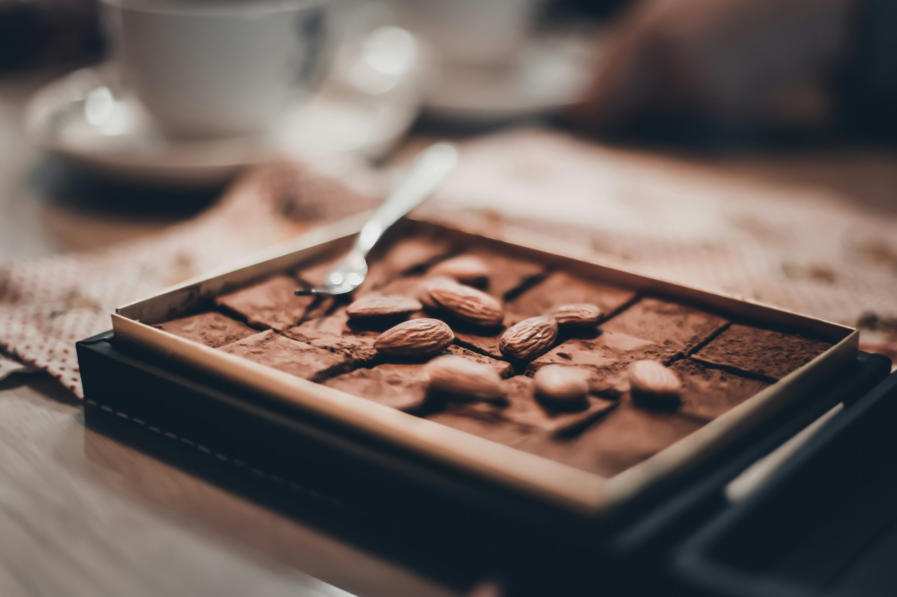

Cakes Around the World: A Delicious Journey Through Time and Culture
An exploration of the history, varieties, and cultural significance of cakes. From decadent chocolate cakes to light and fluffy sponge cakes, discover the unique styles and traditions surrounding this beloved dessert.The Origins of Cake: A Sweet Evolution
The history of cake can be traced back to ancient civilizations, where early versions of cakes were created not with sugar and flour, but with grains and honey. The word 'cake' itself comes from the Old Norse word 'kaka', which referred to a small, flat, round bread. The concept of sweetened cakes, however, began to take shape during the medieval period, particularly in Europe.
In the 16th century, as refined sugar became more accessible, cakes began to evolve from simple breads into more elaborate desserts. The introduction of new ingredients like butter, eggs, and flour allowed for a lighter, fluffier texture, and soon cakes became the centerpiece of celebrations, especially in England and France.
The Industrial Revolution in the 18th century played a significant role in making cakes more widely accessible. With the invention of mechanical mixers and ovens, cakes could be mass-produced and enjoyed by a broader audience. The popularity of cake only increased in the 19th and 20th centuries, with innovations such as the sponge cake, fruitcake, and layered cakes becoming staples at both everyday meals and festive events.
Cakes Around the World: Global Varieties and Traditions
Today, cakes are as diverse as the cultures that create them. From moist, dense fruitcakes to light, airy sponges, there’s a cake for every taste and occasion. Let’s take a closer look at some of the most iconic cakes from around the world.
Chocolate Cake: A Universal Favorite
It’s hard to think of a more universally loved cake than chocolate cake. Rich, indulgent, and deeply satisfying, chocolate cake has become a staple in nearly every country. In the United States, a classic chocolate cake is often paired with a thick layer of chocolate frosting, while in other parts of the world, like Italy, it might be served with a light dusting of powdered sugar or a drizzle of ganache. The origins of chocolate cake can be traced back to the late 19th century, when cocoa powder was introduced as a baking ingredient. Over time, the cake has evolved into many forms, including the ever-popular molten lava cake and flourless chocolate cake.
Sponge Cake: Light and Airy
Sponge cake is one of the most versatile cakes in the world, known for its light, fluffy texture. Unlike most cakes, sponge cakes are made without any fat, relying instead on whipped eggs to provide the necessary lift and texture. This cake is often the base for many layered cakes and desserts, including the famous British Victoria sponge, which is filled with jam and whipped cream. In Japan, a variation of sponge cake, known as castella, is a favorite snack and is typically flavored with honey.
Sponge cakes are popular in many other cultures, including Italy, where the traditional Pan di Spagna (Italian sponge cake) is used as the base for many layered cakes and desserts. In fact, sponge cakes are a fundamental component in many Italian confections like tiramisu and Zuppa Inglese.
Cheesecake: A Rich, Creamy Indulgence
Cheesecake is a beloved dessert that has been enjoyed for thousands of years. The earliest known versions of cheesecake date back to ancient Greece, where they were made with cheese, honey, and flour. Today, cheesecake has evolved into a wide range of variations, with the American-style cheesecake being one of the most popular worldwide.
In the United States, New York-style cheesecake is made with a rich cream cheese filling and a graham cracker crust, often topped with fruit or a drizzle of caramel. Other variations, like the Japanese cheesecake, offer a lighter, fluffier texture, thanks to the addition of whipped egg whites. Across Europe, different cultures have their own take on cheesecake. In Germany, the traditional Käsekuchen is made with quark cheese, giving it a unique, slightly tangy flavor. Meanwhile, in Italy, the famous Ricotta cheesecake is often flavored with citrus zest and topped with candied fruits.
Fruitcake: A Holiday Tradition
While fruitcake may be a polarizing dessert, it has a long-standing tradition, particularly in Western countries. Made with dried fruits, nuts, and spices, fruitcake is often soaked in alcohol such as rum or brandy, which helps preserve the cake and enhance its flavors. The tradition of fruitcake dates back to medieval Europe, where it was considered a luxury food. Over time, the cake became a popular holiday treat, especially during Christmas and weddings.
In Britain, Christmas cake is a fruitcake covered in marzipan and icing, and it’s a staple at holiday celebrations. In other parts of the world, like the Caribbean, fruitcake is made with a blend of tropical fruits and dark rum, resulting in a more intense, boozy flavor.
Baklava: A Sweet, Nutty Delight
While not technically a cake, baklava is a sweet, flaky dessert that has become synonymous with Middle Eastern and Mediterranean cuisine. Made from layers of phyllo dough filled with chopped nuts and sweetened with honey or syrup, baklava is often served during holidays and special occasions. The origins of baklava are debated, with both the Greeks and the Turks claiming it as their own, but its rich flavor and intricate preparation method make it a beloved dessert throughout the region.
Pavlova: A Light, Fruity Dessert
Named after the Russian ballerina Anna Pavlova, this meringue-based cake is a popular dessert in both Australia and New Zealand. The pavlova consists of a crisp meringue shell with a soft, marshmallow-like center, topped with whipped cream and fresh fruit, such as kiwis, strawberries, and passionfruit. Light and refreshing, the pavlova is typically served during the summer months and is a favorite at Christmas celebrations.
Mochi Cake: A Japanese Delicacy
In Japan, mochi cake is a popular dessert made from glutinous rice flour. Unlike traditional cakes made with wheat flour, mochi cakes have a chewy texture that comes from the rice flour. These cakes are often served as part of celebrations, such as the Japanese New Year, and are frequently filled with sweet red bean paste or topped with syrup. Mochi cake is also the foundation for mochi ice cream, a beloved frozen dessert that has become popular worldwide.
Trends and Innovations in Cake Making
While traditional cakes continue to reign supreme, modern bakers and pastry chefs are constantly innovating and finding new ways to push the boundaries of cake-making. Here are some of the latest trends shaping the world of cakes:
Plant-Based Cakes
With the rise of plant-based diets and the increasing demand for vegan and dairy-free options, plant-based cakes have become more popular than ever. These cakes are made without animal products, using alternatives like almond milk, coconut oil, and egg substitutes. Vegan cakes can be just as rich, moist, and flavorful as their traditional counterparts, and many bakeries are offering a variety of plant-based options, including chocolate cakes, carrot cakes, and even cheesecakes.
Naked Cakes
Naked cakes, which are cakes with minimal frosting or no frosting at all, have become a trend in recent years. These cakes emphasize the beauty of the cake itself, with their soft, fluffy layers exposed. Naked cakes are often decorated with fresh flowers, fruits, or simple piping to create a rustic, natural look. They’re especially popular for weddings, where couples may want a less formal, more organic presentation.
Decorative Cakes
Cake decoration has evolved into an art form, with intricate piping, edible flowers, and even 3D cake sculptures taking center stage. The trend of highly decorative cakes has made cake artists and designers more prominent in the culinary world. Cakes are now not just a treat to be enjoyed but also a piece of edible art that reflects a celebration’s theme or the individual tastes of the person being honored.
Conclusion
Cakes are more than just a dessert; they are a reflection of culture, creativity, and celebration. Whether it’s the rich layers of a chocolate cake, the airy fluffiness of a sponge cake, or the delicate beauty of a pavlova, cakes have the power to bring people together and create lasting memories. Across the world, cakes continue to evolve, incorporating new flavors, techniques, and trends, ensuring that this beloved dessert will remain a central part of our lives for generations to come.
So the next time you slice into your favorite cake, take a moment to appreciate the centuries of tradition, innovation, and love that went into its creation.